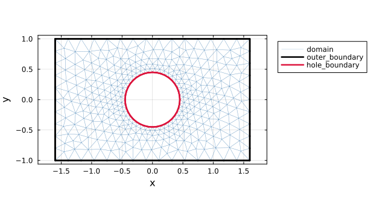
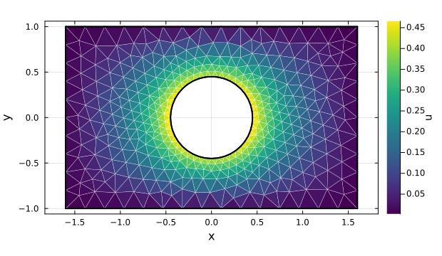

Finite element calculations
This page solves a scalar Poisson problem. The key convention is that finite-element quadrature points are stored in the particle array: after feupdate! fills the quadrature weights and basis data, the same @P2G and @P2G_Matrix macros used for MPM assemble finite-element vectors and matrices.
For quadrature point q in cell c, define a particle p by
\[\bm{x}_p = \bm{x}_c(\bm{\xi}_q), \qquad V_p = \omega_q \det \bm{J}_c(\bm{\xi}_q).\]
Then a particle sum is the usual FEM quadrature rule:
\[\sum_p f(\bm{x}_p) V_p = \sum_c \sum_q f(\bm{x}_c(\bm{\xi}_q)) \omega_q \det \bm{J}_c(\bm{\xi}_q).\]
The particle arrays in this page store fixed Gauss points, not moving MPM material points. With that convention, V[p] is the integration weight and the transfer macros become assembly loops.
Poisson Problem
Problem Setting
Solve
\[-\Delta u = 1 \quad \text{in } \Omega, \qquad u = 0 \quad \text{on } \Gamma_{\mathrm{outer}}, \qquad \nabla u \cdot \bm{n} = 1 \quad \text{on } \Gamma_{\mathrm{hole}},\]
where Ω is a rectangular plate with a circular hole, Γ_outer is the outside rectangle, and Γ_hole is the circular hole.
Generating the Mesh
For simple structured domains, a finite-element mesh can be generated directly from a CartesianMesh:
mesh = FEMesh(CartesianMesh(0.1, (0, 1), (0, 1)))For more complex domains, prepare a .msh file with Gmsh and read it with readmsh. This example uses the mesh file docs/src/assets/plate_with_hole.msh, which contains a rectangular plate with a circular hole. The file contains three physical groups that match the problem notation:
domain: triangular cells for volume integration.outer_boundary: line cells on the outside rectangle.hole_boundary: line cells on the circular hole.
Load Gmsh before calling readmsh. Each physical group is returned as a mesh in the dictionary, keyed by its group name.
using Tesserae
using Gmsh
using LinearAlgebra
meshdir = joinpath(pkgdir(Tesserae), "docs", "src", "assets")
mshfile = joinpath(meshdir, "plate_with_hole.msh")
meshes = readmsh(mshfile; gmsh_argv=["-v", "0"]);
domain = meshes["domain"]
outer_boundary = meshes["outer_boundary"]
hole_boundary = meshes["hole_boundary"]
plot_gmsh_groups(domain, outer_boundary, hole_boundary)
Plot helpers
import Plots
function segment_coordinates(mesh)
xs = Float64[]
ys = Float64[]
for cell in cells(mesh)
nodes = supportnodes(mesh, cell)
for a in eachindex(nodes)
i = nodes[a]
j = nodes[mod1(a + 1, length(nodes))]
push!(xs, mesh[i][1], mesh[j][1], NaN)
push!(ys, mesh[i][2], mesh[j][2], NaN)
end
end
xs, ys
end
function plot_gmsh_groups(domain, outer_boundary, hole_boundary)
plt = Plots.plot(;
aspect_ratio=:equal,
legend=:outertopright,
xlabel="x",
ylabel="y",
size=(620, 360),
framestyle=:box,
)
xs, ys = segment_coordinates(domain)
Plots.plot!(plt, xs, ys; color=:steelblue, linewidth=0.45, alpha=0.45, label="domain")
xs, ys = segment_coordinates(outer_boundary)
Plots.plot!(plt, xs, ys; color=:black, linewidth=2.5, label="outer_boundary")
xs, ys = segment_coordinates(hole_boundary)
Plots.plot!(plt, xs, ys; color=:crimson, linewidth=2.5, label="hole_boundary")
plt
end
Quadrature Data
Use the domain physical group as the finite-element mesh. From the transfer macros, the objects have the same roles as in MPM: grid stores nodal fields, gauss_points is the point array, and weights connects each point to the grid nodes. The meaning of the point array is different, though. For a FEMesh, generate_particles uses the cell quadrature rule by default and returns an nq × ncells(domain) array. Each column contains the Gauss points for one cell, ordered by the quadrature rule of the cell shape.
GridProp = @NamedTuple begin
x :: Vec{2, Float64}
u :: Float64
f :: Float64
end
GaussProp = @NamedTuple begin
x :: Vec{2, Float64}
V :: Float64
end
grid = generate_grid(GridProp, domain)
gauss_points = generate_particles(GaussProp, domain)
weights = generate_basis_weights(domain, size(gauss_points); name=Val(:N))
feupdate!(weights, domain; measure=gauss_points.V)The basis-weight array has the same nq × ncells shape as gauss_points. After feupdate!, each entry stores the element-local basis data for one Gauss point: N[ip] and ∇N[ip] are the value and physical gradient of the basis function associated with local support index ip, and V[p] is the quadrature weight multiplied by the Jacobian measure. This is the same grid/particles/weights pattern used by MPM assembly, but the support nodes come from the finite-element cell connectivity instead of a moving particle search.
Assembly
For the domain terms in the weak form,
\[f_i = \int_\Omega N_i \, d\Omega \approx \sum_p N_i(\bm{x}_p) V_p, \qquad K_{ij} = \int_\Omega \nabla N_i \cdot \nabla N_j \, d\Omega \approx \sum_p \nabla N_i(\bm{x}_p) \cdot \nabla N_j(\bm{x}_p) V_p.\]
Those two terms are assembled directly with transfer macros:
K = create_sparse_matrix(domain; ndofs=1)
@P2G grid=>i gauss_points=>p weights=>ip begin
f[i] = @∑ N[ip] * V[p]
end
@P2G_Matrix grid=>(i,j) gauss_points=>p weights=>(ip,jp) begin
K[i,j] = @∑ ∇N[ip] ⋅ ∇N[jp] * V[p]
endThe Neumann condition on hole_boundary contributes a boundary integral to the right-hand side. Boundary meshes share the domain node numbering, so the contribution can be accumulated into the same grid.f field.
BoundaryGaussProp = @NamedTuple begin
x :: Vec{2, Float64}
dS :: Float64
n :: Vec{2, Float64}
end
hole_gauss_points = generate_particles(BoundaryGaussProp, hole_boundary)
hole_weights = generate_basis_weights(hole_boundary, size(hole_gauss_points); name=Val(:N))
feupdate!(
hole_weights,
hole_boundary;
measure=hole_gauss_points.dS,
normal=hole_gauss_points.n,
)
neumann_flux(x, n) = 1.0
@P2G grid=>i hole_gauss_points=>p hole_weights=>ip begin
f[i] = @∑ N[ip] * neumann_flux(x[p], n[p]) * dS[p]
endBoundary Conditions
The outer boundary uses homogeneous Dirichlet data. The boundary values stay zero and only the free degrees of freedom are solved.
The solution grid.u is a nodal field. The plot below colors each triangular cell by the average of its nodal values and overlays the boundary groups.
boundary_nodes = supportnodes(outer_boundary)
dofmask = trues(1, size(grid)...)
dofmask[1, boundary_nodes] .= false
free = DofMap(dofmask)
free(grid.u) .= Symmetric(extract(K, free)) \ Array(free(grid.f))
plot_solution(domain, grid.u, outer_boundary, hole_boundary)
Solution plot helpers
import Plots
function plot_solution(mesh, u, outer_boundary, hole_boundary)
shapes = Plots.Shape[]
values = Float64[]
for cell in cells(mesh)
nodes = supportnodes(mesh, cell)
push!(shapes, Plots.Shape([mesh[i][1] for i in nodes], [mesh[i][2] for i in nodes]))
push!(values, sum(u[i] for i in nodes) / length(nodes))
end
plt = Plots.plot(
shapes;
fill_z=permutedims(values),
color=:viridis,
linecolor=:white,
linewidth=0.25,
colorbar_title="u",
aspect_ratio=:equal,
xlabel="x",
ylabel="y",
label=false,
size=(620, 360),
framestyle=:box,
)
bx, by = segment_coordinates(outer_boundary)
Plots.plot!(plt, bx, by; color=:black, linewidth=1.8, label=false)
bx, by = segment_coordinates(hole_boundary)
Plots.plot!(plt, bx, by; color=:black, linewidth=1.8, label=false)
plt
endAPI
Tesserae.FEMesh — Type
FEMesh(shape, nodes, cellsupports)
FEMesh(cartesian_mesh)
FEMesh(shape, cartesian_mesh)Create a finite-element mesh.
shape is the cell shape, nodes stores the nodal coordinates, and cellsupports stores the node indices of each cell. cells(mesh) iterates over cell indices, while supportnodes(mesh, cell) returns the nodes used by one cell.
The Cartesian constructors are convenience constructors for structured test meshes and examples. FEMesh(cartesian_mesh) uses the default first-order cell shape for the dimension: Line2, Quad4, or Hex8. Passing an explicit shape allows triangular, tetrahedral, and higher-order cells to be generated from the Cartesian grid.
FEMesh is used by the finite-element workflow. Use generate_particles to create quadrature points, generate_basis_weights to create element-local basis storage, and feupdate! to fill the quadrature weights and basis values.
Tesserae.supportnodes — Method
supportnodes(mesh::FEMesh)
supportnodes(mesh::FEMesh, cell::Int)Return the sorted node indices used by mesh, or the local support node indices of cell.
Tesserae.feupdate! — Function
feupdate!(weights, mesh[, nodes]; measure=nothing, quadrature_rule=quadrature_rule(cellshape(mesh)))
feupdate!(weights, boundary_mesh[, nodes]; measure=nothing, normal=nothing, quadrature_rule=quadrature_rule(cellshape(boundary_mesh)))Fill finite-element basis data at quadrature points.
weights is usually created by generate_basis_weights with dimensions matching the number of quadrature points per cell and the number of cells in mesh. For a domain mesh, feupdate! stores the basis values and physical gradients in each BasisWeight. If measure is provided, it is filled with the quadrature weight multiplied by the Jacobian measure, such as dV in 3D or dA in 2D.
For a lower-dimensional boundary mesh, feupdate! stores basis values for boundary integration. If normal is provided, it is filled with unit normals computed from the boundary Jacobian. Normals are available for 2D curves and 3D surfaces; a 3D line has no unique normal and throws an ArgumentError.
Pass nodes to evaluate the geometry on coordinates different from mesh itself, for example when assembling on a deformed configuration.
Example
mesh = FEMesh(CartesianMesh(0.1, (-1, 1), (-1, 1)))
points = generate_particles(@NamedTuple{x::Vec{2, Float64}, V::Float64}, mesh)
weights = generate_basis_weights(mesh, size(points); name=Val(:N))
feupdate!(weights, mesh; measure=points.V)After the update, N[ip] and ∇N[ip] can be used inside transfer macros such as @P2G and @P2G_Matrix to assemble FEM vectors and matrices.
Tesserae.readmsh — Function
readmsh(filename::AbstractString; gmsh_argv=String[], reorient_boundary=false)Read a Gmsh .msh file.
This method is provided by the Gmsh extension. Load Gmsh before calling it:
using Tesserae
using Gmsh
meshes = readmsh("mesh.msh")Returns a Dict{String,FEMesh} keyed by physical group name. Each physical group is read as one FEMesh and must contain exactly one supported element shape. Unnamed physical groups use keys of the form "physical_group[dim,tag]".
Pass reorient_boundary=true to reorder boundary cells that match exactly one volume face to follow the outward volume face orientation. Boundary cells that do not match a volume face, or match multiple volume faces, are left unchanged and reported with a warning.